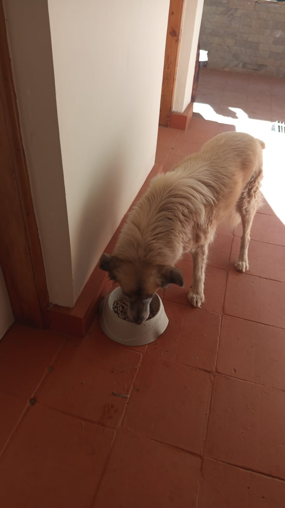

Mucheru World of Golf
Extensive civil engineering, material logistics, water storage infrastructure, and course landscaping were executed at Mucheru World of Golf on Saturday, 26th September 2026 under the oversight of Mr. Gichuhi and Ken, with dedicated on-site supervision by Joe Kamanu and Peter Githinji:
- Green 7 Subgrade Drainage & Foundation Engineering (Joe Kamanu): Green 7 reached major structural milestones today. Yesterday's unreported preparation involved slitting PVC drainage pipes with precision longitudinal perforations to facilitate subgrade water collection. Today, the farm tractor hauled hardcore rocks directly to the green bed, where they were tipped and integrated. A heavy-duty black polythene membrane was laid along the foundation perimeter base. Slit PVC drainage pipes wrapped in geotextile filter netting were positioned and aligned inside the excavated herringbone trenches. Clean ballast stones were then backfilled directly over the pipes to anchor and cushion the drainage lines. Green 7 subsequently received 6 separate tipper lorry deliveries of red loam soil, from which site laborers applied and precision-leveled 3 lorries worth of red soil across the green bed.
- Course-Wide Red Soil Material Deliveries: A massive logistics operation was completed across the entire golf facility, delivering 1 commercial tipper lorry load of high-quality red loam topsoil to every single green (Greens 1 – 18) and every single championship teebox (Tees 1 – 18). This supply provides the essential agronomic topsoil and structural fill needed for platform contouring, apron shaping, and foundation build-ups across all 36 playing complexes, with Green 7 receiving an additional 6 dedicated lorry loads.
- Dam 1 & Dam 3 Polythene Liner Installation & Seam Welding (Peter Githinji): Significant water storage infrastructure milestones were accomplished across the dams. Heavy-duty black polythene dam liners were rolled out and positioned across the cleared basin floor and slopes of Dam 1. Site technicians connected adjacent liner sheets through thermal welding, heating and burning the overlapping polythene edges to create robust, watertight bonded seams across the entire reservoir basin. At Dam 3, heavy-duty liner panels were laid out across the excavated channel bed and side slopes, positioned and staged for subsequent seam joining and connection.
- Agronomy & Landscape Maintenance — Palm Tree Red Soil Refilling: The women's site crew conducted targeted agronomic maintenance, backfilling and refilling rich red loam soil around the root collars of newly planted palm trees positioned along the course boundary corridors to encourage healthy establishment.
- Course-Wide Outlet Drainage Alignment & Marking: Specialized drainage crews surveyed and marked out the alignment lines for all greens outlet drainage channels using high-visibility white chalk/lime markings. Drainage outlet alignments were established across the entire golf course, excluding Green 7 (actively undergoing pipe and ballast installation) and Green 5 (outlet line already excavated and tied into Dam 2).
- Heavy Machinery & Tractor Fleet Utilization: In strict compliance with equipment consolidation rules, the Backhoe Loader operated for a total of 3.0 machine hours at KES 6,500/hr (KES 19,500.00), supporting site earthmoving, spreading dumped septic soil at Chaka Farms, uprooting boundary flowers, and material logistics. The red farm tractor and trailer operated full shift hauling hardcore rocks to Green 7 and supporting site haulage.
Mucheru Engineering Milestone Summary
Green 7 achieved major structural progression with tractor hardcore haulage, polythene membrane lining, slit PVC pipes and filter netting installed in trenches, ballast stone backfill, 6 lorries of red soil delivered, and 3 lorries leveled. Dam 1 liners were applied with thermally welded and connected seams, Dam 3 liners were laid out along the channel bed, 1 lorry of red loam was delivered to all 18 greens and 18 teeboxes, and greens outlet drainage was systematically marked across the course.
Operational equipment hours and financial summary for Saturday, 26th September 2026. Consolidated in strict compliance with the single Backhoe Loader reporting standard:
| Equipment Description | Operating Hours | Hourly Billing Rate | Total Cost (KES) | Specific Operational Scope & Activities Conducted |
|---|---|---|---|---|
| Backhoe Loader (XGMA) | 3.00 Machine Hrs | KES 6,500.00 / hr | 19,500.00 | Spreading out excavated dumped soil from septic tank hole at Chaka Farms dumping area; uprooting perimeter flower bushes outside gate; site logistics and earthwork support at golf site. |
| Farm Tractor & Trailer | Full Shift | Internal Farm Asset | — | Hauling hardcore rocks to Green 7 foundation bed; hauling excavated soil from septic tank excavation at Chaka Farms to farm dumping site. |
| Total Operational Cost | 3.00 Machine Hrs | KES 19,500.00 | Active Site Fleet | |
Equipment Utilization Note
In accordance with site reporting directives, the Backhoe Loader (XGMA) operational hours are strictly consolidated under a single entry (3.0 hrs @ KES 6,500/hr = KES 19,500.00), covering tasks across both Chaka Farms and Mucheru World of Golf. The farm tractor operated as an internal logistics asset supporting haulage of hardcore rocks and excavated earth.
Logistics and material inventory received and distributed across construction zones at Mucheru World of Golf on Saturday, 26th September 2026:
| Material Type | Quantity Received | Source / Supplier | Placement / Application Zone |
|---|---|---|---|
| Red Loam Topsoil | 42+ Tipper Lorries (1 lorry each to all 18 greens & 18 tees, plus 6 lorries to Green 7) | Commercial Quarry Delivery | Distributed across all 18 greens and 18 championship teeboxes; Green 7 received 6 lorries, with 3 lorries spread and precision-leveled |
| Hardcore Rocks | Tractor Trailer Loads | Internal Site Borrow Area | Hauled via farm tractor and integrated into Green 7 foundation bed |
| Ballast Stones | Consignment Delivery | Quarry Supplier | Applied across Green 7 herringbone trenches directly atop slit PVC pipes |
| PVC Drainage Pipes & Netting | Perforated Slit Pipes & Filter Netting | Plumbing Supplier Delivery | Installed inside subgrade herringbone trenches across Green 7 foundation |
| Polythene Membrane & Dam Liners | Heavy-Duty Polythene Rolls | Specialized Materials Supplier | Installed along Green 7 base perimeter; deployed across Dam 1 (seams thermally welded and connected) and Dam 3 channel bed |
Comprehensive ground video capturing Saturday, 26th September operations: tractor hauling hardcore to Green 7, polythene membrane positioning, crew setting up slit PVC pipes and filter net inside trenches, ballast stones applied over pipes, tipper lorries dumping red soil, and laborers applying and leveling 3 lorries worth of red loam across Green 7; Dam 1 liner rollout, placement, and thermal seam welding; Dam 3 liner placement along the channel bed; palm tree red soil refilling; and chalk marking of greens drainage outlets.
Comprehensive 18-hole putting green status ledger tracking foundation bases, pumice compaction, riversand spreading, contouring, and drainage connections. Highlighting incremental updates on September 26, 2026:
| Green | Current Technical & Agronomic State | Milestone Status |
|---|---|---|
| Green 1 | Clean riversand hauled and 100% fully applied across entire foundation bed over compacted volcanic pumice sub-base ready for final leveling (Sep 25); received 1 lorry red soil delivery (Sep 26); drainage outlet alignment marked with chalk (Sep 26). | Riversand Fully Applied |
| Green 2 | Clean riversand applied and spread across the entire green bed over compacted volcanic pumice sub-base (Sep 23); received 1 lorry red soil delivery (Sep 26); drainage outlet alignment marked with chalk (Sep 26). | Riversand Applied |
| Green 3 | Clean riversand hauled and actively applied across green foundation surface ready for leveling (Sep 22); received 1 lorry red soil delivery (Sep 26); drainage outlet alignment marked with chalk (Sep 26). | Riversand Applied |
| Green 4 | Surrounding soil around Green 4 leveled to ground level using Backhoe Loader (Sep 24); clean riversand spread (Sep 22); received 1 lorry red soil delivery (Sep 26); drainage outlet alignment marked with chalk (Sep 26). | Surrounds Leveled |
| Green 5 | Subgrade drainage trenching line fully connected into Dam 2 outfall (Sep 21); ready; fully established mature championship putting green turfgrass under active sprinkler irrigation; received 1 lorry red soil delivery (Sep 26). | Turf Ready • Drainage Tied |
| Green 6 | Received 1 lorry red soil delivery on green surrounds (Sep 26); drainage outlet alignment marked with chalk (Sep 26); palm planting advanced to Green 6 (Sep 23); raised soil barrier berm pushed back (Sep 21). | Red Soil In • Palms Placed |
| Green 7 Today | Farm tractor hauled hardcore rocks to green bed; heavy-duty polythene membrane installed; slit PVC drainage pipes wrapped in filter net laid in trenches and buried under clean ballast stone infill; received 6 dedicated lorries of red soil, with 3 lorries spread and precision-leveled across green foundation bed (Sep 26); drone survey verified complete herringbone drainage network and red soil surrounds; hardcore rock infill complete (Sep 25); subgrade drainage trenched. | Pipes, Ballast & Red Soil Applied |
| Green 8 | Riversand applied earlier remains unleveled (Sep 20); received 1 lorry red soil delivery (Sep 26); drainage outlet alignment marked with chalk (Sep 26); subgrade drainage trenches excavated. | Riversand Unleveled |
| Green 9 | Clean riversand application completed across the entire green surface ready for final leveling (Sep 23); received 1 lorry red soil delivery (Sep 26); drainage outlet alignment marked with chalk (Sep 26). | Riversand Applied |
| Green 10 | Stockpiled soil hill near Green 10 cut into and reshaped using Backhoe Loader (Sep 24); volcanic pumice sub-base compacted with roller (Sep 20); received 1 lorry red soil delivery (Sep 26); drainage outlet alignment marked with chalk (Sep 26). | Soil Reshaped • Compacted |
| Green 11 | Volcanic pumice sub-base compacted with vibratory roller compactor (Sep 20); received 1 lorry red soil delivery (Sep 26); drainage outlet alignment marked with chalk (Sep 26); membrane placed; drainage cut. | Pumice Compacted |
| Green 12 | Volcanic pumice sub-base compacted with vibratory roller compactor (Sep 20); received 1 lorry red soil delivery (Sep 26); drainage outlet alignment marked with chalk (Sep 26); membrane placed; drainage cut. | Pumice Compacted |
| Green 13 | Red soil apron surrounds precision leveled and graded by site crew following additional red loam filling (Sep 25); received 1 lorry red soil delivery (Sep 26); drainage outlet alignment marked with chalk (Sep 26); pumice compacted (Sep 20). | Apron Leveled • Pumice Compacted |
| Green 14 | Earthen barrier berm raised and reshaped along green boundary using Backhoe Loader (Sep 23); received 1 lorry red soil delivery (Sep 26); drainage outlet alignment marked with chalk (Sep 26); pumice compacted (Sep 20). | Barrier Berm Raised |
| Green 15 | Boundary with Green 10 reshaped; volcanic pumice compacted with vibratory roller (Sep 20); outfall drainage connected to Dam 1 (Sep 17); received 1 lorry red soil delivery (Sep 26); drainage outlet alignment marked with chalk (Sep 26). | Boundary Reshaped • Compacted |
| Green 16 | Protective earthen barrier berm between Tee 16 and Green 16 reworked, graded, and reinforced using Backhoe Loader (Sep 25); received 1 lorry red soil delivery (Sep 26); drainage outlet alignment marked with chalk (Sep 26); pumice compacted (Sep 20). | Tee-Green Barrier Reworked |
| Green 17 | Red soil apron surrounds precision leveled and graded by site crew following additional red loam filling (Sep 25); protective barrier berm reshaped (Sep 25); received 1 lorry red soil delivery (Sep 26); drainage outlet alignment marked with chalk (Sep 26). | Apron Leveled • Berm Reshaped |
| Green 18 | Backhoe moved adjacent protective barrier and dumped soil onto nearby hill, designing and reshaping the contoured mound (Sep 25); received 1 lorry red soil delivery (Sep 26); drainage outlet alignment marked with chalk (Sep 26); pumice compacted (Sep 20). | Mound Reshaped • Compacted |
Comprehensive 18-hole championship teebox platform audit tracking earthwork leveling, structural embankments, and playing corridor alignments. Preserved day-to-day continuity as of September 26, 2026:
| Teebox | Current Technical & Earthwork State | Platform Status |
|---|---|---|
| Tee 1 | Championship launch platform completely reshaped, cut, and graded to design elevation using Backhoe Loader (Sep 24); received 1 lorry red soil delivery (Sep 26). | Platform Reshaped |
| Tee 2 | Playing launch platform completely reshaped, contoured, and graded using Backhoe Loader (Sep 24); received 1 lorry red soil delivery (Sep 26). | Platform Reshaped |
| Tee 3 | Playing launch platform completely reshaped, contoured, and graded using Backhoe Loader (Sep 24); received 1 lorry red soil delivery (Sep 26). | Platform Reshaped |
| Tee 4 | Championship launch platform completely reshaped, cut, and graded using Backhoe Loader (Sep 23); received 1 lorry red soil delivery (Sep 26). | Platform Reshaped |
| Tee 5 | Launch platform completely reshaped, cut, and graded using Backhoe Loader (Sep 22); received 1 lorry red soil delivery (Sep 26); palm trees planted along boundary corridor. | Platform Reshaped |
| Tee 6 | Precision leveling and compaction completed; fresh delivery of 1 lorry red loam topsoil unloaded at platform surrounds (Sep 26). | Red Soil In • Leveled |
| Tee 7 | Dual launch platforms completely reshaped and precision contour-leveled using XGMA backhoe loader (Sep 20); received 1 lorry red soil delivery (Sep 26). | Dual Platforms Reshaped |
| Tee 8 | Graded, leveled, and contour-adjusted; fresh delivery of 1 lorry red loam topsoil unloaded directly on platform (Sep 26). | Red Soil In • Graded |
| Tee 9 | Playing platform leveled and surrounding perimeter ground graded (Sep 1); received 1 lorry red soil delivery (Sep 26). | Platform Leveled |
| Tee 10 | Graded and compacted platform serving the start of the back-nine playing corridor; received 1 lorry red soil delivery (Sep 26). | Platform Compacted |
| Tee 11 | Rough shaping, elevation grading, and Backhoe subsoil leveling completed (Sep 7); received 1 lorry red soil delivery (Sep 26). | Shaped & Graded |
| Tee 12 | Dual platforms established: primary championship tee resized; new forward Ladies' Tee platform constructed (Sep 5); received 1 lorry red soil delivery (Sep 26). | Dual Platforms Complete |
| Tee 13 | Playing platform completely reshaped, contour-cut, and precision leveled to design elevations using Backhoe Loader (Sep 25); received 1 lorry red soil delivery (Sep 26). | Platform Reshaped |
| Tee 14 | Playing platform reshaped, elevation precision-leveled, and protective boundary embankment reinforced (Sep 16); received 1 lorry red soil delivery (Sep 26). | Reshaped & Leveled |
| Tee 15 | Playing platform completely shaped and contour-leveled with backhoe loader (Sep 19); received 1 lorry red soil delivery (Sep 26); main HDPE waterline laid in boundary trench (Sep 15). | Shaped & Leveled |
| Tee 16 | Protective earthen boundary barrier between Tee 16 and Green 16 reshaped, graded, and reinforced using Backhoe Loader (Sep 25); received 1 lorry red soil delivery (Sep 26); platform leveled (Sep 20). | Barrier Berm Reworked |
| Tee 17 | Championship launch platform completely reshaped, contour-cut, and precision-graded to design elevation using Backhoe Loader (Sep 25); received 1 lorry red soil delivery (Sep 26). | Platform Reshaped |
| Tee 18 | Championship tee platform leveled; perimeter approach cleared and graded (Sep 1); received 1 lorry red soil delivery (Sep 26). | Platform Leveled |
Operations Synthesis • Course Progress Rates
Greens Status (18 Holes): 1 green (Green 5) has established turfgrass under active sprinkler irrigation with drainage tied to Dam 2. 6 greens (Greens 1, 2, 3, 4, 8, 9) have clean riversand applied, with Green 1 reaching 100% full coverage. 10 greens (Greens 10 – 18, and Green 1) have completed compacted volcanic pumice sub-bases. Green 7 achieved major structural progression today with tractor hardcore haulage, polythene membrane lining, slit PVC pipes and filter netting installed in trenches, ballast stone backfill, 6 dedicated lorries of red soil delivered, and 3 lorries leveled. All 18 greens received 1 lorry load of red soil, and outlet drainage alignments were marked across the course.
Teebox Status (18 Holes): All 18 playing platforms received 1 lorry load of red loam topsoil today to build up foundations and fine-grade surfaces. 12 playing platforms (Tees 1, 2, 3, 4, 5, 7, 12, 13, 14, 15, 16, 17) are fully reshaped and precision graded, with Tees 6 and 8 receiving specific delivery staging today. The remaining platforms (Tees 9, 10, 11, 18) remain leveled and compacted in bulk earthworks.
Comprehensive sequential field photography documenting Green 7 hardcore haulage, PVC pipe and ballast trench installation, red soil deliveries and leveling, outlet drainage marking, and dam liner deployment:

Green 7 Sub-Base — Loading Hardcore Rocks
Farm labor crew loading heavy hardcore rocks onto the red tractor trailer for haulage to the Green 7 foundation bed.

Green 7 Foundation — Hardcore Rock Delivery
Red farm tractor tipping a trailer load of hardcore rocks directly onto the Green 7 foundation base for placement and leveling.

Drainage Preparation — Slit PVC Pipes
Detailed close-up of perforated orange PVC drainage pipes with precision-cut slits to permit rapid subsurface water infiltration.

Drainage Materials — Pipes & Protective Netting
Slit PVC drainage pipes and rolls of green protective filter netting staged adjacent to Green 7 ready for trench installation.

Green 7 Base — Polythene Membrane Setup
Site laborers unrolling and positioning heavy-duty black polythene membrane along the Green 7 foundation perimeter.

Subgrade Drainage — Crew Setting PVC Pipes
Civil drainage crew positioning and aligning perforated PVC pipes within excavated herringbone trenches across Green 7.

Herringbone Drainage — Pipe & Net Alignment
Laborers fitting orange drainage pipes wrapped in filter netting into the rock-bordered subgrade trench lines on Green 7.

Drainage Infill — Pipe Buried Under Ballast
Close-up view of perforated PVC drainage pipe enveloped in protective netting and backfilled under clean ballast stone aggregate.

Green 7 Infill — Ballast Atop Drainage Pipes
Overview of the Green 7 foundation bed showing ballast stones applied over the drainage pipe trench network, with polythene lining along perimeter.

Foundation Sub-Base — Completed Ballast Layer
Clean ballast aggregate backfilled and leveled across Green 7 drainage trenches, providing permeable cushioning over pipes.

Course Deliveries — Red Loam Tipper Delivery
Commercial heavy tipper truck discharging a fresh load of screened red loam soil on site during the course-wide delivery campaign.

Materials Logistics — Commercial Red Soil Inflow
Yellow commercial tipper lorry unloading red topsoil on site, providing 1 lorry load to each green and teebox across the course.

Teebox Logistics — Red Soil Delivery at Tees 6 & 8
Tipper lorry discharging a dedicated load of red loam topsoil at the Teebox 6 and Teebox 8 sector for platform grading.

Green Logistics — Red Soil Stockpile at Green 6
Fresh stockpile of red loam topsoil unloaded adjacent to Green 6 for surround contouring and agronomic dressing.

Green 7 Supply — Tipper Delivery at Bed Edge
Commercial tipper lorry discharging one of 6 dedicated red soil loads directly along the perimeter edge of Green 7.

Green 7 Logistics — Red Loam Stockpiles Staged
Generous stockpiles of delivered red soil staged alongside the Green 7 foundation bed ready for wheelbarrow transport and spreading.

Green 7 Agronomy — Wheelbarrowing Red Soil
Laborers wheelbarrowing and distributing fresh red loam soil across the Green 7 hardcore and ballast foundation base.

Green 7 Milestone — Leveling 3 Lorries of Red Soil
Civil crew with rakes and shovels actively spreading and precision-leveling 3 lorries worth of red loam soil across Green 7.

Drainage Survey — Setting Drainage Outlet Pegs
Site drainage technician establishing line pegs and measuring grade alignment for a green outlet drainage channel.

Drainage Layout — Chalk Marking Outlet Channel
High-visibility white chalk line marked across the fairway terrain delineating the path for the green subsurface outlet drain.

Dam 1 Infrastructure — Initial Liner Rollout
Initial stages of deploying heavy-duty black polythene liner sheets along the excavated floor and slope transitions of Dam 1.

Dam 1 Construction — Embankment Liner Placement
Large site crew positioning and stretching black polythene liner sheets up the steep embankment shoulder of Dam 1.

Dam 1 Milestone — Liner Applied Across Basin
Dam 1 basin floor fully covered with heavy-duty black polythene liner membrane, staged for thermal seam sealing.

Dam 1 Seam Sealing — Thermal Polythene Welding
Technicians heating and burning polythene edges to weld overlapping sheets together into seamless, watertight bonded joints.

Dam 3 Infrastructure — Liner Deployment Along Channel
Large site crew unrolling and positioning heavy-duty polythene liner sheets across the excavated channel bed and side slopes of Dam 3, awaiting seam connection.

Dam 3 Drone Survey — Liners Placed, Awaiting Connection
High-altitude aerial drone photograph capturing multiple heavy-duty black polythene liner panels laid out sequentially along the Dam 3 excavated channel bed and embankment slopes, positioned and awaiting thermal seam welding to connect adjacent sheets.

Green 7 Drone Survey — Completed Ballast & Red Soil Foundation
Aerial drone overview of Green 7 revealing the full extent of the completed herringbone drainage network covered in clean ballast stone aggregate, surrounded by fresh red loam topsoil fill and bordered by established fairway turf.

Dam 1 Drone Survey — Liner Placed & Seams Connected
Aerial drone photograph showing Dam 1 basin floor fully covered with thermally welded polythene liner membrane, with site technicians visible on the surface completing final seam connections and edge anchoring.

Dam 1 Aerial Overview — Full Reservoir Liner Coverage
Wide-angle aerial drone survey of Dam 1 showing the entire reservoir basin floor and slopes uniformly covered with connected heavy-duty polythene liner membrane, with orange HDPE drainage pipes visible at the embankment edge.
Chaka Farms
Field operations conducted at Chaka Farms on Saturday, 26th September 2026 covered heavy equipment excavation, farm tractor logistics, backhoe earthwork, boundary maintenance, dairy milking reconciliation, working dog unit care, and compound cleanliness:
- Septic Tank Excavation & Tractor Haulage (Dennis & Ken): Dennis and Ken oversaw the excavation of the old tank at the washroom next to the farm office using the backhoe loader. The machine dug out the old structure and excavated additional space required for installing the new septic tank. The excavated soil was dumped directly onto the farm tractor trailer, which hauled it away to a designated dumping location on the farm.
- Soil Spreading at Dumping Site (Dennis & Ken): Following tractor haulage, the backhoe loader was deployed at the farm dumping location to spread out and level the excavated soil heaps dumped from the septic tank hole, ensuring clean, orderly terrain management.
- Perimeter Flower Uprooting (Dennis & Ken): Along the Chaka Farms boundary near the gate entrance, the backhoe loader was utilized to cleanly uproot the old perimeter flower bushes and root clumps that were left outside following the recent gate repositioning, clearing the entryway perimeter.
- Dairy Milking Yield & Utilization (Kamandau): Total gross dairy cow milk yield recorded 5.0 Litres (2.5L morning, 2.5L evening). Deductions drawn out of total yield included 1.0L for goat kids (0.5L morning and 0.5L evening), 0.5L allocated to Gladys, and 0.5L allocated to Maasai, resulting in a net farm reserve balance of 3.0 Litres.
- Canine Unit Care, Training & Supply Status (Willy): Willy carried out daily kennel cleaning and reinforced kennel manners. Obedience training focused on practicing the "paw" command, and dog cleaning was completed. Willy reported that cleaning disinfectant and dog shampoo are finished and require replenishment.
- Compound Maintenance (Margaret & Monica): Margaret and Monica carried out routine sweeping and cleaning across the farm compound and walkways, maintaining general cleanliness.
Chaka Farms Operations Summary
The old tank near the office washroom was successfully dug out and the pit expanded for the new septic tank, with all excavated soil hauled away and spread out by the backhoe. Boundary perimeter flowers were uprooted, milking yielded 5.0L gross with 3.0L net farm reserve, canine training and cleaning were conducted, and the compound remained neat.
Quantitative breakdown of gross dairy production, scheduled nutrition disbursements, and net farm inventory for Saturday, 26th September 2026:
| Production / Allocation Category | Morning Session | Evening Session | Daily Total | Accounting Impact |
|---|---|---|---|---|
| Gross Dairy Cow Milk Production | 2.5 L | 2.5 L | 5.0 L | Gross Inflow (Total Harvested) |
| Goat Kids Milk Ration | 0.5 L | 0.5 L | - 1.0 L | Disbursement (Nutrition Ration) |
| Gladys Allocation | — | — | - 0.5 L | Disbursement (Staff Allocation) |
| Maasai Allocation | — | — | - 0.5 L | Disbursement (Staff Allocation) |
| Total Allocations & Disbursements Deducted | - 2.0 L | Total Outflow | ||
| Net Remaining Farm Reserve Balance | 3.0 L | Net Farm Inventory | ||
📌 Dairy Ledger Reconciliation Note
In strict compliance with farm accounting standards, all milk yields are recorded in Litres (L). Allocations and staff disbursements (2.0L total) are deducted directly from the gross harvest (5.0L), yielding an exact net farm reserve balance of 3.0 Litres.
⚠️ Supply Restock Alert • Canine Unit
Willy reported that on-site supplies of pet cleaning disinfectant spray and dog shampoo are completely finished. Restocking is required to support upcoming kennel sanitation and dog grooming schedules.
Photographic documentation of septic tank excavation, tractor soil haulage, soil spreading, perimeter flower uprooting, and canine supplies at Chaka Farms:

Septic Tank Excavation — Backhoe Digging
Backhoe loader excavating the old tank pit next to the office washroom and expanding the area for the new septic tank.

Soil Logistics — Loading Farm Tractor
Excavated soil being loaded directly onto the red farm tractor trailer for haulage to the farm dumping site.

Excavation Complete — New Septic Pit
Deep excavated pit fully prepared and cleared, ready for the installation of the new septic tank.

Earthwork — Spreading Dumped Soil
Backhoe loader front bucket spreading out and leveling the dumped soil piles hauled from the septic tank excavation.

Perimeter Clearance — Flowers Uprooted Outside Gate
Excavated root clumps of perimeter flowers outside the fence line following recent gate repositioning.

Boundary Maintenance — Backhoe Uprooting Flowers
Backhoe loader backhoe boom cleanly clearing and uprooting remaining perimeter shrubs along the farm entryway.

Canine Supplies — Depleted Inventory
Empty bottles of pet disinfectant spray and dog shampoo photographed after kennel cleaning and dog washing.
Kabete Residence
Civil works and domestic pet care were carried out at Kabete Residence on Saturday, 26th September 2026, with updates overseen and shared by Njoki:
- Column Rebar Ground-Level Setting: Construction workers positioned and secured vertical column reinforcement bars at ground level inside the excavated pit, anchoring them properly on the concrete foundation pad.
- Platform Concrete Screeding: Workers mixed and laid concrete screeding across the upper platform slab to achieve a smooth, uniform surface finish.
- Domestic Pet Care & Feeding: Domestic pet routines were maintained throughout the day; Ajabu the Golden Retriever was fed from his food bowl along the veranda walkway, and resident cats Reo and Aiko were fed side-by-side on the veranda floor.
Kabete Milestone Summary
Vertical column reinforcement bars were set and secured at ground level in the foundation pit, platform screeding was completed smoothly, and domestic pets were fed and cared for.
Photographic documentation of column rebar placement, concrete screeding, and domestic pet care at Kabete Residence:

Civil Works — Screeding & Column Rebar
Overhead view showing workers applying concrete screed on the upper deck while column rebar cages are set in the pit below.

Foundation Pit — Ground-Level Column Bars
Worker leveling the foundation base around vertical steel column rebar cages set in place inside the excavated area.

Substructure — Column Bars Positioned
Close-up view of column rebar cages positioned and tied at the ground level of the foundation pit.

Upper Platform — Concrete Screeding
Civil crew working on screeding the upper platform floor slab while the foundation column cages stand below.

Rebar Placement — Foundation Level
Vertical perspective of steel column rebar cages tied securely on the concrete foundation footing pad.

Construction Progress — Deck & Foundation
Wide angle of the ongoing platform screeding and vertical column reinforcement installation.

Domestic Pet Care — Ajabu
Ajabu the Golden Retriever enjoying his meal from a food bowl on the tiled veranda walkway.

Domestic Pet Care — Reo & Aiko
Resident cats Reo and Aiko feeding side-by-side from their food bowls on the veranda floor.
Rose Park Apartment
Following wall surface preparations, painting works made steady progress across six key areas at Rose Park Apartment on Saturday, 26th September 2026:
- Main Entrance: Painting works underway on the walls around the main entrance to restore a clean, fresh finish.
- Living Room TV Area: Painting in progress on the living room wall behind the television mounting bracket.
- Laundry Area: Paint application progressing smoothly along the laundry room partition wall.
- Kitchen Area Shelves: Applying clean white paint to the kitchen pantry shelving units.
- Back Door Area: Painting walls in the walkway leading to the back door.
- Bedroom: Wall painting in progress across the bedroom surfaces.
Painting Milestone Summary
Paint application progressed steadily across six distinct areas of the apartment, providing fresh coats to the entrance, TV wall, laundry wall, kitchen shelves, back door area, and bedroom.
Photographic documentation of interior painting works across six active areas at Rose Park Apartment:

Main Entrance — Wall Painting
Fresh paint being applied to the walls at the main entrance area.

Living Room — TV Wall Painting
Wall paint application in progress around the television mounting frame.

Laundry Area — Partition Wall Painting
Painting the lower partition wall in the laundry area.

Kitchen Storage — Shelf Painting
Applying fresh paint coats to the built-in kitchen storage shelves.

Back Door Area — Wall Painting
Paint application in progress on the walls and reveals leading to the back door.

Bedroom — Wall Painting
Fresh paint coats applied across the bedroom walls.
Amani Cottage
Grounds maintenance and entryway care were conducted at Amani Cottage on Saturday, 26th September 2026 under Edwin:
- Compound Sweeping: Edwin carried out sweeping across the compound grounds, clearing fallen leaves and debris to maintain neat outdoor spaces.
- Entrance Door Balcony Cleaning: Thorough cleaning and sweeping of the entrance door balcony, keeping the front entryway tidy and presentable.
Grounds Maintenance Summary
Compound sweeping and front entrance door balcony cleaning were completed, maintaining an orderly and clean environment around Amani Cottage.